I'm a junior at Carnegie Mellon, majoring in electrical and computer engineering (ECE) with a minor in robotics. Much of my recent work has been in state estimation, both for robotic systems--snake robots--and for biological systems--populations of weakly electric fish. When I'm not diving into research, you can find me reading, playing piano, and practicing parkour.

About
Work
Carnegie Mellon University: Biorobotics Lab Undergraduate Researcher (January 2019-present)
Since freshman year, I've been doing research at the Biorobotics Lab, mainly on state estimation and control for snake robots. I outline some of my projects below.
Stereo Visual Odometry
I developed a pipeline to estimate the position and orientation of a moving camera using OpenCV and ROS, performing nonlinear optimization using Ceres Solver. Below are the results on the KITTI dataset. One of my current goals is to integrate other sensors into this pipeline and use it for snake robots.
Code (C++): https://github.com/EpicDuckPotato/stereo_vo/tree/bundle_adjustment

Extended Kalman Filter
I wrote an extended Kalman filter (EKF) to estimate the orientation of a snake robot. It fuses data from all the inertial measurement units (IMUs) and encoders on the snake's body, and incorporates outlier detection to account for individual sensor failures. I used the algorithm from "Robust State Estimation With Redundant Proprioceptive Sensors," by David Rollinson. I used C++ within a ROS environment.
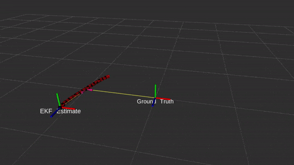
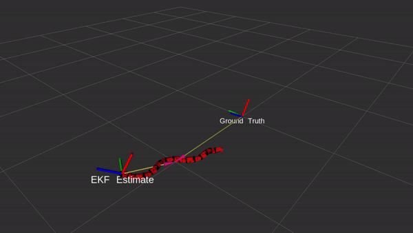
Shape-Based Compliant Control
I prototyped algorithms enabling a snake robot to maneuver past obstacles by complying the shape of its body. The algorithms were derived from "Shape-Based Compliance in Locomotion," by Matthew Travers. I primarily worked in MATLAB.


Sensor Diagnostic Tool
The lab needed a tool to quickly diagnose stale sensors on the snake. I developed this tool within a wxPython GUI.
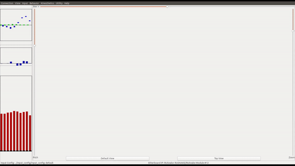Auto-Orienting Camera Feed
The orientation of a snake robot's head changes constantly as it moves. Even if the snake's head is upside down relative to its starting orientation, its operator should have a right-side up camera feed. I implemented this functionality in a ROS node using Python and OpenCV.
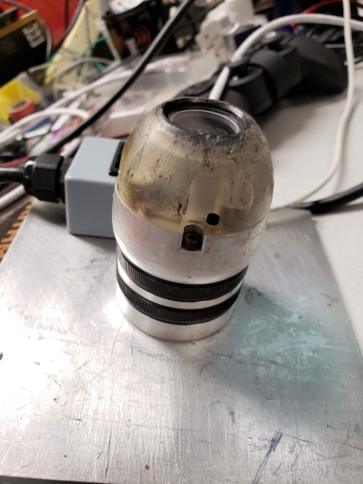Johns Hopkins University: LIMBS Lab NSF REU Research Intern (May 2020-July 2020)
As a researcher at Johns Hopkins, I developed algorithms to estimate the pose of weakly electric fish with an array of electrodes. Estimating these fishes' states will be useful in understanding their group behavior, as well as the ecology of their environment. One of my main accomplishments was deriving a physics-based algorithm to efficiently initialize electric fish trackers. My algorithm relies on the interpolated potential and gradient fields shown below. The actual fish pose is shown using a black ellipse, and the electrodes are shown with black dots.
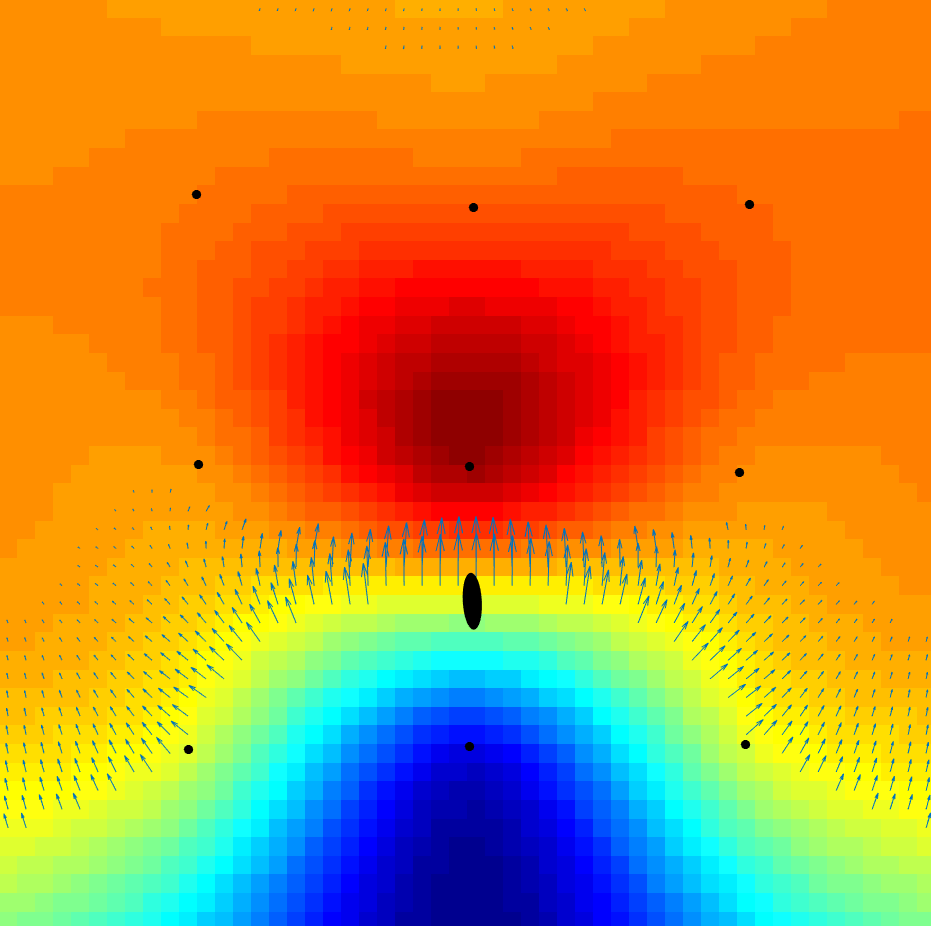
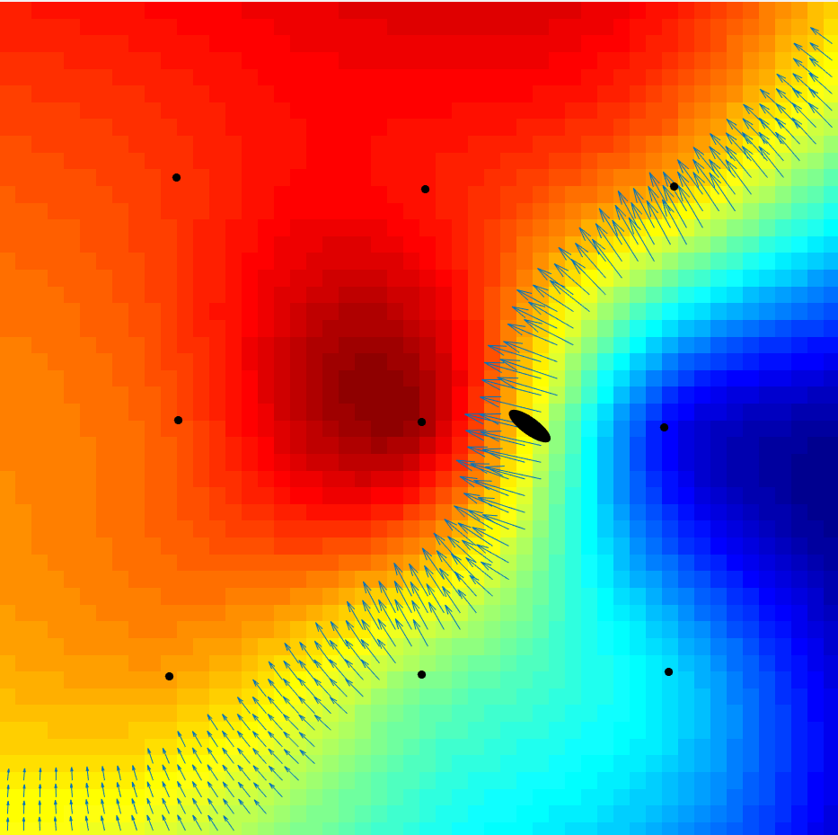
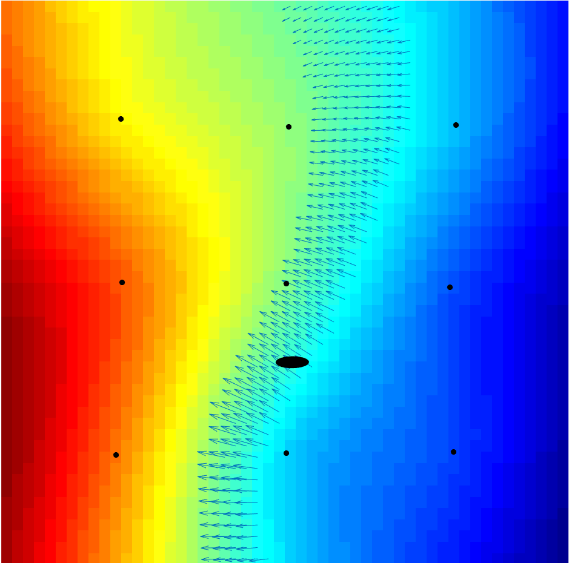
Using this algorithm, I made the lab's existing fish tracker 250 times more memory efficient. Specifically, the existing tracker used a particle filter with 250,000 particles. With my initialization method, it only needs 1,000.
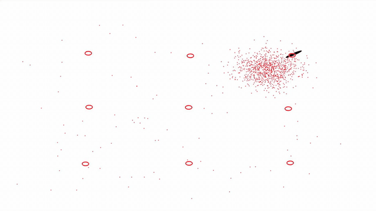After deriving this algorithm, I used it to design an extended Kalman filter (EKF). The EKF tracks the fish 90 times faster than the existing particle filter, and offers the same level of accuracy when certain physical assumptions hold. Understanding when these assumptions break down is an area of future research.
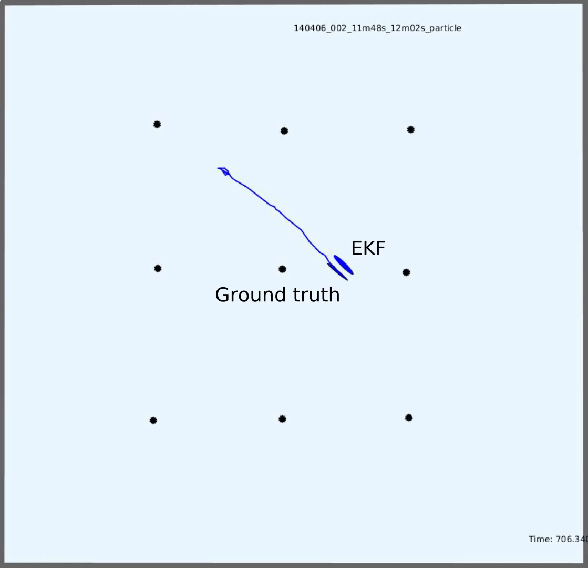I was awarded "Best Presentation" at the final REU seminar for my work. I primarily worked in MATLAB.
Analytical Graphics Inc. Software Engineering Intern (May 2019-July 2019)
As an intern at AGI, I worked on STK Components, an aerospace simulation API for C# and Java. My main accomplishments were:
- Enabling higher resolution terrain simulation by adding support for a new type of terrain file
- Writing a tutorial page for Components' numerical integrators, analyzing their effectiveness for various systems of differential equations
- Testing Components’ astronomical capabilities against the Standards of Fundamental Astronomy
- Adding new coordinate types (DynamicDelaunayElements, DynamicEquinoctialElements, DynamicKozaiIzsakMeanElements) for orbit representation.
Projects
Scribble June 2020-August 2020
I trained a neural network to generate handwriting for a given input string, using the network architecture from Alex Graves' famous paper "Generating Sequences With Recurrent Neural Networks." I implemented the network in PyTorch. Code (Python): https://colab.research.google.com/drive/1O1newbojussOslQkaOxmYnI6PtW_WwQ9?usp=sharing
Robotic Medical Assistant April 2020-May 2020
For my final project in "Introduction to Robotics," I designed and controlled a nasal swabbing robot within a Gazebo simulation environment. Code (C++): https://github.com/EpicDuckPotato/RobotSwabber
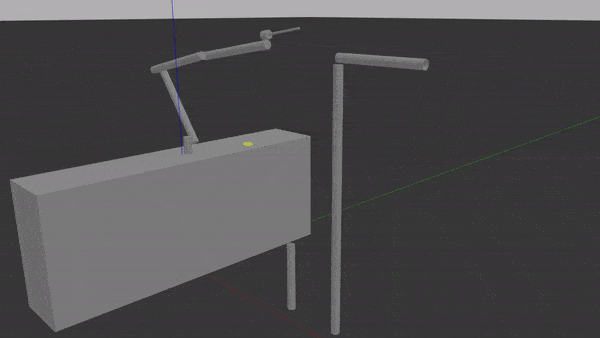Rube Goldberg Machine January 2019
For the first lab in "Introduction to Robtics," I worked on a team of three to build a Rube Goldberg machine in a week, designed to fit various mechanical constraints. The first video below is our final demo video. The second is the initial test for our launch mechanism, which was one of my favorite parts of the project.
Robot Kinematics and Dynamics Capstone November 2019-December 2019
For my final project in "Robot Kinematics and Dynamics," I programmed a 5 degree-of-freedom robotic arm to traverse a series of narrow mazes without touching the sides. I implemented trajectory planning using inverse kinematics and spline interpolation, as well as gravity compensation, all in MATLAB.
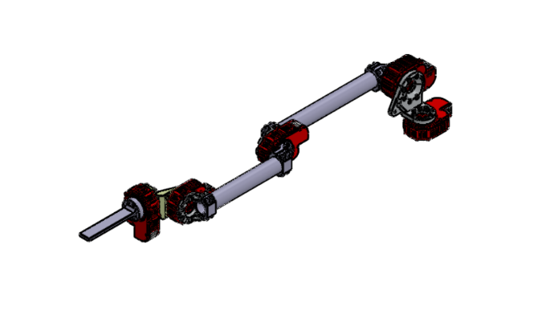Hack the Universe February 2019
One of the fundamental problems in quantum mechanics is finding the "ground state" wave function of a quantum system. For many-body systems, simply storing this wave function requires an impractically large amount of memory, and computing it becomes infeasible using traditional methods. During Hack the Universe, I worked on a team to compute the ground state wave function using a neural network, specifically a restricted Boltzmann machine. We implemented the algorithm from "Solving the Quantum Many-Body Problem with Artificial Neural Networks," by Giuseppe Carleo. Code (Python): https://github.com/evannw/htuquantumml
Trobots January 2019
For Build18, I worked on a team to build a robotic cat that tracks light. We ran OpenCV on a Raspberry Pi, which communicated with an Arduino to control the robot's motors.
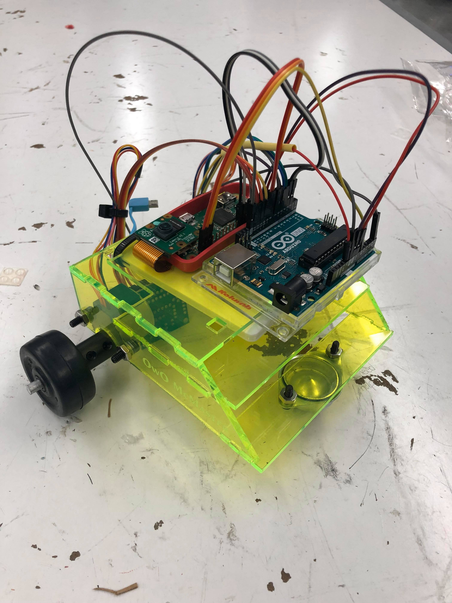
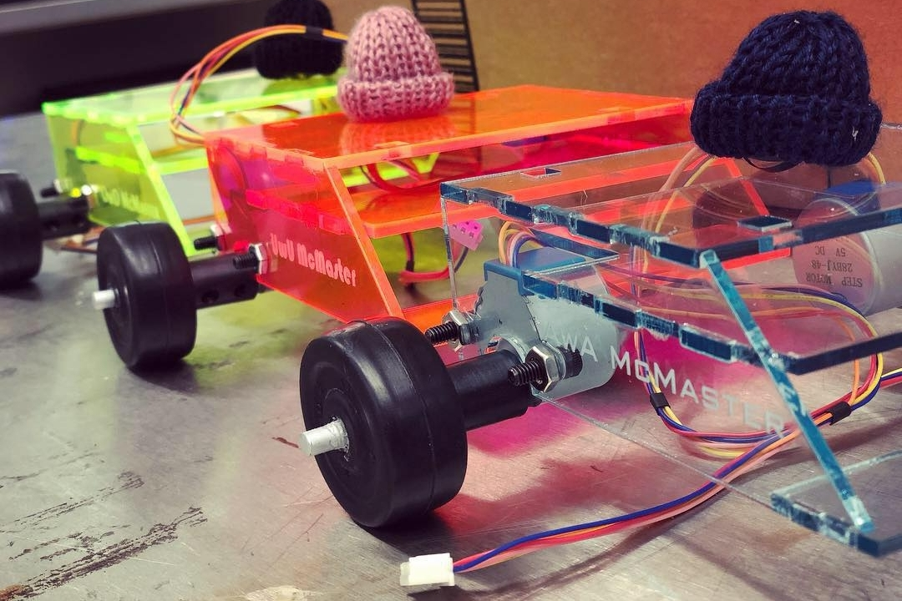
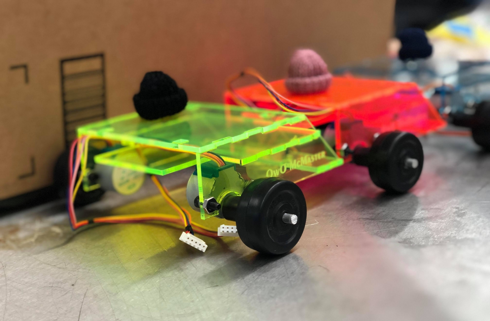
Resume
Contact
Email: agbhat@andrew.cmu.edu Cell: 215-421-8957